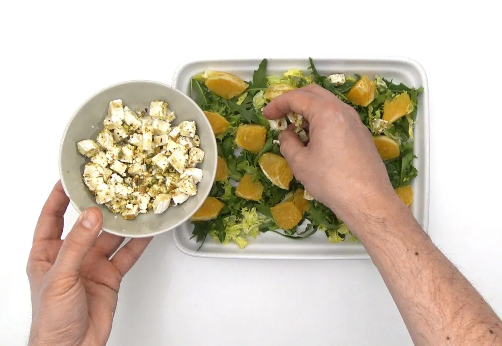

Esta ensalada con naranja, queso de cabra y pistachos, estos aportan vitamina, minerales y proteínas. Si no tienes, sustitúyelos por otro fruto seco.

• 200 gramos de escarola
• 50 gramos de rúcula (sustituye escarola y rúcula por la lechuga que tengas)
• 2 naranjas
• 300 gramos de rulo de queso de cabra (rebaja calorías con queso fresco)
• 50 gramos de pistachos
• 5 cucharadas de aceite de oliva virgen
• 1 cucharada de vinagre de jerez
• Cebollino (opcional)
• Sal
1. Trocea, lava y seca la escarola. Lava y seca la rúcula.
2. Corta una naranja y media en gajos y retira la piel. Exprime la mitad restante para extraer el zumo.
3. Lava, seca y pica el cebollino.
4. Pela y pica los pistachos.
5. Prepara la vinagreta mezclando cuatro cucharadas de aceite con el vinagre, dos cucharadas de zumo de naranja, una pizca de sal y dos cucharadas de cebollino picado.
6. Retira la corteza del rulo de queso de cabra, corta el queso en trozos, úntate las manos con aceite para formar bolitas y rebózalas con los pistachos picados.
7. Reparte los ingredientes en los platos y aliña con la vinagreta.

Estas son unas galletas de avena muy saludables y fáciles, ideales…
24/05/2025 Leer más
La dieta para deportistas de alto rendimiento juega un papel crucial para…
24/05/2025 Leer más
Elegir una dieta antiinflamatoria es clave para prevenir y combatir la inflamación que…
24/05/2025 Leer más
Estas galletas de calabaza se han vuelto una de mis recetas favoritas. Te prometo que te van a encantar…
24/05/2025 Leer más
Este smoothie es una excelente manera de comenzar el…
24/05/2025 Leer más
Esta ensalada con naranja, queso de cabra y pistachos, aportan…
24/05/2025 Leer más